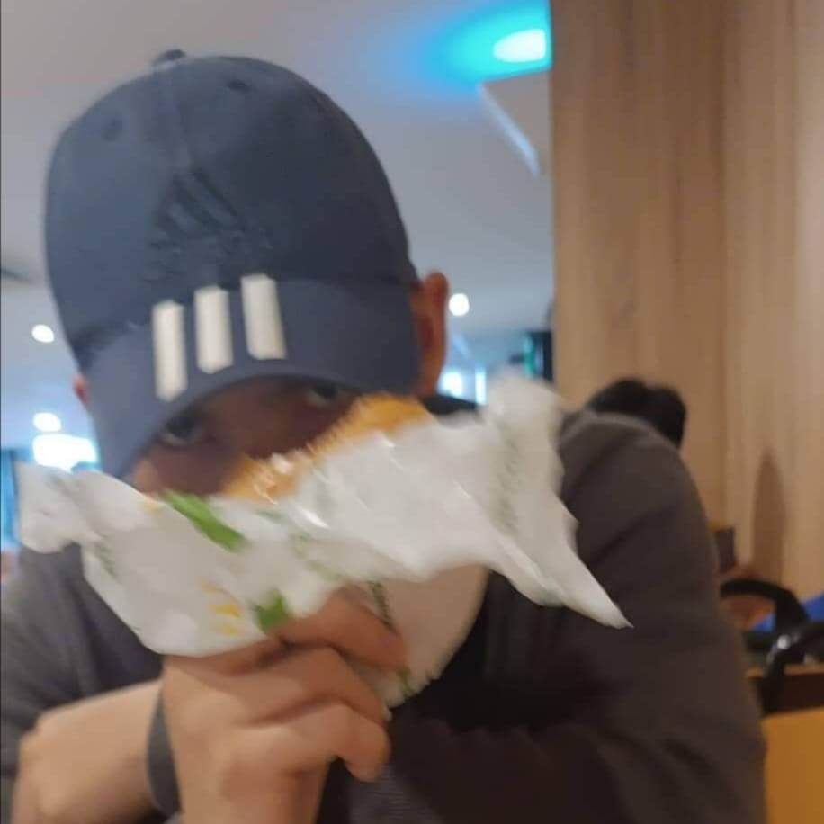

ABOUT ME!

Bil Clinth Dulalas
1ST YEAR COMPUTER SCIENCE STUDENT
ABOUT ME :)
Good day everyone! My name is Bil Clinth A. Dulalas, 20 years of age, a freshman student from University of Bohol,
currently studying the Computer Science course. I was born in Tagbilaran City, Bohol and grew up in Mayacabac, Dauis, Bohol..
What is your guiding principle
in living your life and why is that so?
My guiding principle in life is "Make every day an adventure".
It is because setting challenges to ourselves gives us the opportunity to learn from it and face it with courage.
Making every day an adventure gives us experiences and excitement no matter what path we chose in life.
Enumerate your accoplishments, litter or unimportant i may seems,
where you and your family are proud of.
Even though I didn't accomplish much, I think that graduating from senior high school qualifies as an accomplishment.
It's because getting the diploma makes us feel proud that our effort and
struggle during senior high school have paid off and I’m looking forward to achieving huge accomplishments in the future
such as graduating college and pursuing a career in life and getting successful from it.